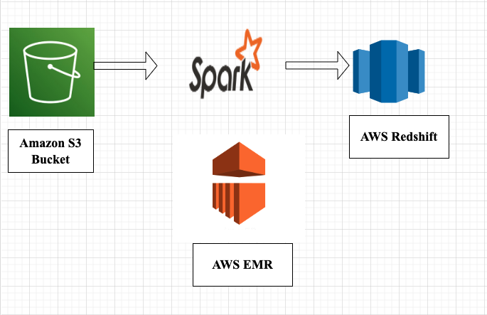
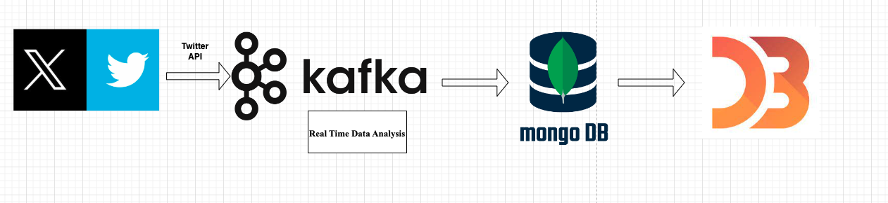

Summary
Highly skilled Data Engineer with 3+ years of experience in designing and implementing ETL pipelines using Python and Spark. Proficient in cloud services (AWS: S3, Glue, EMR, Lambda | Azure: Data Bricks, Data Factory) and Snowflake. Experienced in automating data architectures with CI/CD pipelines using Jenkins for enhanced performance and reliability.
Skills
- Programming Language and Tools
- Collobartion with Cross Functional Team
Education
- Master's in Applied Computer Science - Frostburg State University

- Bachelor's in Computer Science - Virginia Commonwealth University

Experience
Cloud Data Engineer
CVS Health
Designed and implemented ETL pipelines with Glue scripts, Python, Pandas, and Spark (including RDD and DataFrame API) within EMR for data processing and analysis. Loaded data into Snowflake and AWS Redshift for efficient batch processing workflows with SQL. Orchestrated CI/CD pipelines with Jenkins, Git, and AWS CloudWatch, reducing deployment time by 25%, improving error handling, and enhancing overall efficiency by 20%. Leveraged Docker and Kubernetes for containerization within ECS and EKS to ensure seamless deployment and scalability of the ETL process. Collaborated with cross-functional teams to align data strategies with business objectives, improving data-driven decision-making accuracy.
Data Engineer
Performance Food Group
Engineered and optimized ETL pipelines in Azure Databricks for Snowflake, processing sales, inventory, and consumer data with Python, PySpark, and SQL. Conducted statistical and machine learning analysis using Scikit-learn and Scipy to extract actionable insights. Utilized Matplotlib and Seaborn, and Power BI for data visualization, creating comprehensive reports to empower stakeholders with sales and inventory insights.
Projects
Spotify Song Analysis
Conducted ETL pipeline processes for Spotify song dataset. Extracted data from S3 using Spark on EMR, transformed data to analyze song attributes, and loaded processed data into Redshift for analytics. Analyzed trends in song attributes such as danceability and energy, explored temporal and seasonal variations in music consumption, investigated song popularity across different platforms and services, identified correlations between song features and chart rankings, and provided valuable insights for stakeholders in the music industry.
Twitter Hash Tag Data Analysis
Extracted live tweet data using the Twitter API. Utilized streaming data processing frameworks like Apache Kafka for real-time data ingestion. Performed data analysis and aggregation using Apache Spark Streaming to extract insights from the tweet stream. Stored processed data in a NoSQL database such as MongoDB for scalability and flexibility in handling unstructured tweet data. Visualized tweet metrics and trends using D3.js, creating interactive dashboards to display key performance indicators such as tweet volume, popular hashtags, and user engagement..
Contact
sarthaksahoo49@gmail.com
571-303-9819
https://www.linkedin.com/in/sarthaksahoo511/